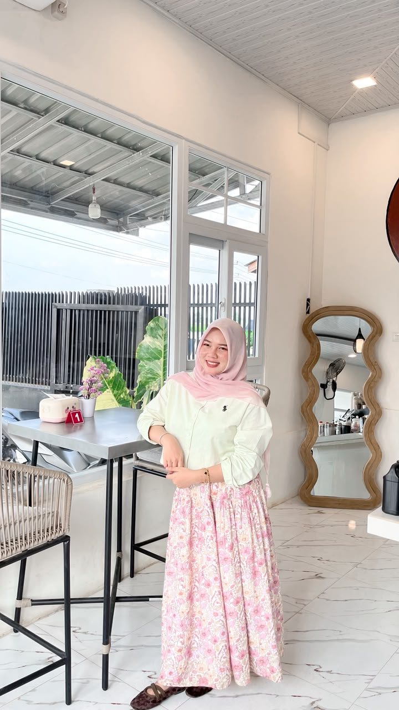

HELLO, WELCOME TO MY WEBSITE
Halo! Aku Reni, seorang mahasiswi Informatika di Universitas Samudra. Selamat datang di website profil pribadiku!
About Me
Hai! Perkenalkan, nama lengkapku adalah Raihani dan biasa dipanggil Reni. Aku lahir di Mns Leubok pada tanggal 26 Maret 2007. Saat ini aku sedang menempuh pendidikan di Universitas Samudra dengan program studi Informatika dan sekarang berada di semester 3. Aku memiliki hobi mendengarkan musik. Bagiku, musik adalah salah satu cara untuk menikmati waktu dan mengekspresikan perasaan.
Nama Lengkap
Raihani
Nama Panggilan
Reni
Tempat, Tanggal Lahir
Mns Leubok, 26 Maret 2007
Jenis Kelamin
Perempuan
Alamat
Lhoknibong
Agama
Islam
Universitas
Universitas Samudra
Program Studi
Informatika
Semester
Semester 3
Mendengarkan Musik
Seblak
Matcha
Soft Pink
One of my favorite artists.
Music that I love listening to.